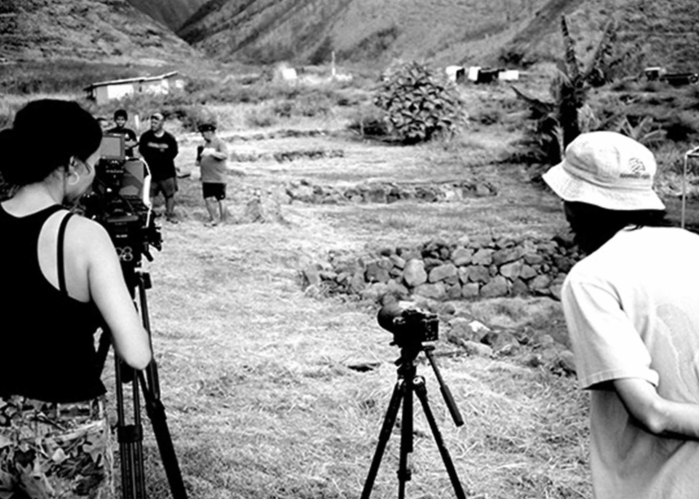

PROJECTS
ABOUT
FIELD
RESEARCH
PROJECTS
ABOUT
FIELD
RESEARCH

27 May 2025
Opening of Hanauma: He Wahi Loli Mau (2025) .
02 April 2025
Color correction at White Light Post .
23 November 2024
Book project on the aesthetic FIELD of the political.
30 October 2024
MANIFESTO/宣言 .
24 July 2024
SOCIAL + MOVEMENT MANIFESTO .
12 July 2024
Second grant for Sovereign from Hoʻākea Source .
19 March 2024
The best documentaries of the last few years (such as Theo Montoya's Anhell69 [2023]) are the ones where the fictional aspects of the film emphasize the absurdities of the real.
3 March 2024
SOVEREIGN ("Ea Ea"), a documentary film about Keʻeaumoku Kapu is in the third act of the editing stage.
24 March 2023
At Mokuʻula, the site where tradition was enshrined along the constitutional cusp of a new modernity, we listen to the ground amid the ruins of a large baseball field. This revered corridor of time persists even amid Pioneer MIllʻs struggle to eliminate signs of the past.
21 February 2023
Interview with Uncle Sam Kaʻai. Well-known kumu Ekela Kaniaupio-Crozier reflects on the politics of the Hawaiian language. Mayor Bissen gives Q&A session on the Nākoa yacht.
16 February 2023
Production begins for
Sovereign
14 January 2023
Clean-up activity at Malu'ulu o Lele Park (sponsored by Nā ʻĀikane O Maui).